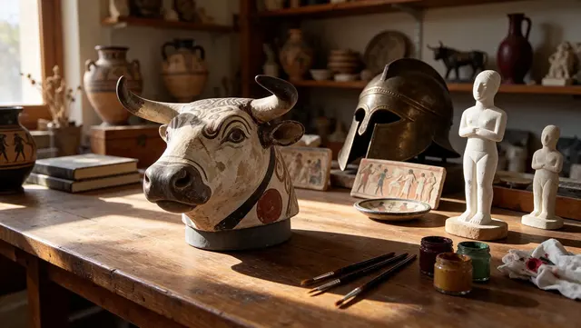

Νέο πλαίσιο για τα ενοίκια: τι αλλάζει από τον Ιανουάριο για ιδιοκτήτες και ενοικιαστές
Οι βασικές αλλαγές, οι προθεσμίες και ποιους αφορούν — εξηγημένα απλά, βήμα βήμα.
Της Αμαλία Κουμπούρα · πριν από 8′ · 6′ ανάγνωση
Ειδήσεις με έλεγχο, όχι με βιασύνη
Οι βασικές αλλαγές, οι προθεσμίες και ποιους αφορούν — εξηγημένα απλά, βήμα βήμα.
Της Αμαλία Κουμπούρα · πριν από 8′ · 6′ ανάγνωση
 Τουρισμός
ΤουρισμόςΟι τοπικοί επαγγελματίες ζητούν καλύτερη οργάνωση στα σημεία θέασης.
 Περιφέρεια
ΠεριφέρειαΟι εργασίες ολοκληρώθηκαν νωρίτερα από το χρονοδιάγραμμα.
 Περιφέρεια
ΠεριφέρειαΗ πρόταση του δήμου παρουσιάζεται σε ανοιχτή συνέλευση την Τρίτη.
 Οικονομία
ΟικονομίαΟι περιοχές με τις περισσότερες άδειες και τι σημαίνει για τις τιμές.
Η πρώτη είδηση δεν είναι πάντα η σωστή. Η σωστή είναι αυτή που αντέχει τον έλεγχο.
Αμαλία ΚουμπούραΌσα συμβαίνουν στη γειτονιά μας αλλάζουν την καθημερινότητα πιο γρήγορα από τα μεγάλα θέματα.
ΑρθρογράφοςΈνα μέσο που παραδέχεται το λάθος του κερδίζει αναγνώστες που μένουν.
ΑρθρογράφοςΤο ντέρμπι κρίθηκε στις καθυστερήσεις
Τρίτη σερί νίκη στην Ευρώπη με εντυπωσιακό τελευταίο δεκάλεπτο
Πρόκριση στον τελικό του κυπέλλου μετά από πέντε σετ
 Πολιτισμός
ΠολιτισμόςΑπό την αρχαία τραγωδία ως τη νέα ελληνική δραματουργία.
 Πολιτισμός
ΠολιτισμόςΤο πρόγραμμα, οι ώρες και πώς θα κλείσετε θέση.

ΠολιτισμόςΤεχνίτες μιλούν για τη δουλειά των χεριών σε μια εποχή μηχανών.
Πρόταση σχεδίου από την Advon Media · Τα κείμενα και οι φωτογραφίες είναι δείγματα, όχι πραγματικές ειδήσεις.